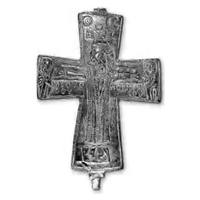

Catalog › CE-0462 · SYR2012-39
Valvă de encolpion (față), cat. 39, NMIU Kiev
sec. X–XII (901–1200) · loc necunoscut · Muzeul Național de Istorie a Ucrainei (НМИУ), Kiev; colecția „siriană” B. I. și V. N. Hanenko, inv. в 4626/242 (4206)
single valve of a reliquary cross, altul; c. X–XII (901–1200); find spot unknown; kept at Muzeul Național de Istorie a Ucrainei (НМИУ), Kiev; colecția „siriană” B. I. și V. N. Hanenko.


Identificare
- Categorie
- Valvă izolată
- Material
- Altul
- Tehnică
- Turnare în relief; Gravare (incizie)
- Dimensiuni
- Î 70 × L 54 × Gr 9 mm
Iconografie
- Descriere avers
- Răstignirea cu preaslăvitori, iconografie tradițională; imaginile în relief sunt completate cu dalta. Inscripție încâlcită, cu litere adâncite: citat din Evanghelia după Ioan (In 19, 26–27).
- Inscripții
- IΛCOVO ΛΟVIMHP / COV ICOV (citat din In 19, 26–27)
- Limba
- Greacă
Datare și atribuire
- Datare
- sec. X–XII (901–1200)
- Tipologie
- Răstignirea cu preaslăvitori – Maica Domnului cu patru evangheliști (în medalioane); tip răspândit în lumea bizantină, cat. 39–47 și 77
Descoperire
- Context
- Colecție (fără context)
- Coordonate
- 50.4536° N, 30.5164° E
- Precizia locului
- Loc de păstrare (loc de descoperire incert)
Păstrare și referințe
- Colecție
- Muzeul Național de Istorie a Ucrainei (НМИУ), Kiev; colecția „siriană” B. I. și V. N. Hanenko
- Nr. inventar
- в 4626/242 (4206)
- Bibliografie
- A. A. Пескова, Л. В. Строкова, Христианские древности Византии в «Сирийской коллекции» Б. И. и В. Н. Ханенко, Sankt-Petersburg–Kiev, 2012, 225 p. [Peskova, Strokova 2012], p. 124, cat. nr. 39, ilustrația (fotografie și desen) de la p. 124.
- Figura
- ilustrația la cat. nr. 39
- Planșe
- Peskova, Strokova 2012, p. 124
- Observații
- Valva anterioară a unei cruci-relicvar cu brațe drepte evazate; valva subțire, lăcaș adânc, rebord vertical; pe interior scurgeri de turnare; pierderi de metal pe rebord; urechea de sus ruptă; pe capătul de jos, pe exterior, o adâncitură. Imagini și inscripții clare. Autoarele notează inscripțiile standard adâncite pe valva anterioară, pe două rânduri. Dimensiuni în sursă (în paranteză, înălțimea cu urechile): 7,0 (8,2)×5,4 cm; grosime 0,6–0,9 cm. Vechiul număr de inventar al Muzeului de Artă Hanenko (1925) este cel din paranteză. Album Hanenko, vol. III (needitat): tabla XXXVII, nr. 371. Atribuirea autoarelor: Bizanț, sec. X–XII. Locul descoperirii nu este dat în sursă. Material în sursă: aliaj de cupru. Locul descoperirii nu e cunoscut cu precizie; punctul de pe hartă marchează locul de păstrare (Muzeul Național de Istorie a Ucrainei), nu locul descoperirii. Coordonate: nu sunt date în sursă.
Citare: Corpus Encolpiorum, CE-0462, Valvă de encolpion (față), cat. 39, NMIU Kiev, https://vitaliejosanu1979-ux.github.io/primul-meu-proiect/piese/SYR2012-39/ (accesat 2026-10-17).